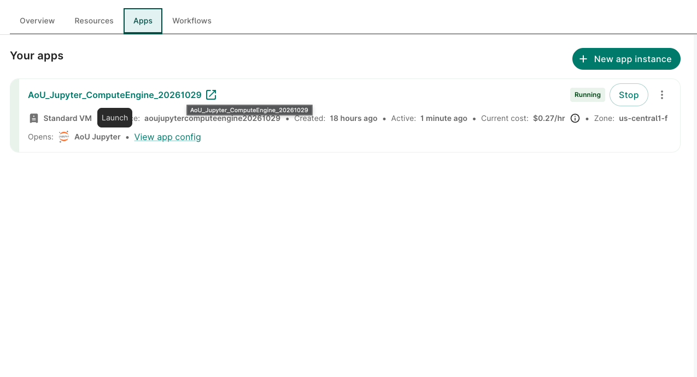
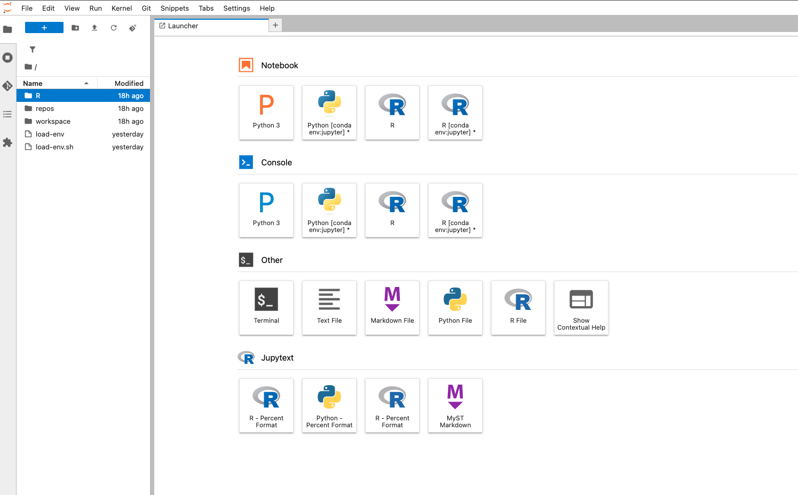
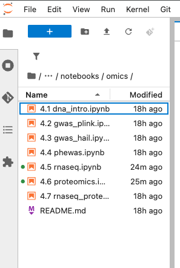
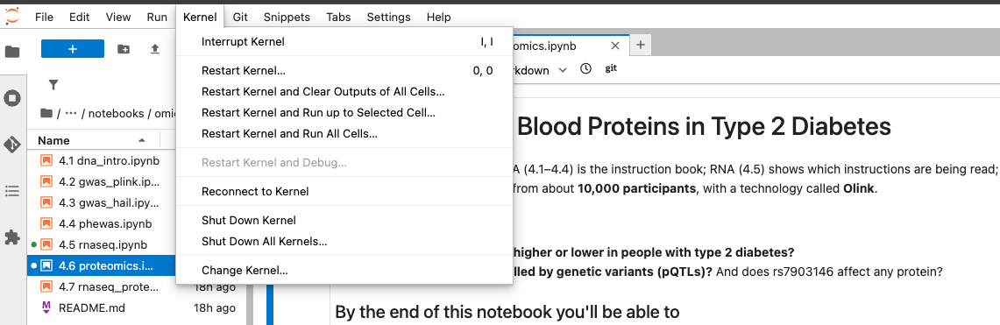

4.1 Introduction to Genomic Data
Omics series, class 1 of 7 · R + PLINK · 120 minutes
Open the notebook on GitHub Omics series overview Omics for Beginners
Overview
All of Us has sequenced the genomes of more than 535,000 participants. This class answers the first questions anyone has about that data: what is it, where is it, who has it, and how do I connect it to people’s health records? It ends with a first look at rs7903146, the variant in the gene TCF7L2 that is the strongest known genetic risk factor for type 2 diabetes.
Why this class matters
Every later genetics class (4.2–4.4) depends on what happens here: the cohort linked to genomes, the related people removed, the genetic ancestry that every model adjusts for, and a small extract of the genome that’s cheap to work with. Doing these steps carefully once, and understanding them, prevents the most common mistakes in genetic studies.
By the end you’ll be able to
- Explain DNA, variants, alleles, and genotypes in plain language
- Describe the All of Us genomic data and its file formats
- Find the genomic files, and the ready-made ancestry and relatedness files
- Link genomes to the type 2 diabetes cohort and choose a fair sample
- Use PLINK 2 to extract one region of the genome, and look at one famous variant
Analysis at a glance
| ❓ Question | Where is the genomic data, who in our cohort has it, and is the T allele of rs7903146 more common in people with type 2 diabetes? |
| 🧪 The analysis | Counts and allele frequencies in cases and controls; a first logistic regression of case status on the number of T alleles (unadjusted) |
| 🎯 Why | Before any genome-wide analysis, check that the genomes link to the cohort and that a known signal shows up. Logistic regression, because the outcome is yes/no |
| ✅ What we conclude | The direction and rough size of a well-known association, and a sample ready for 4.2 |
| ⚠️ What it can’t tell us | The effect after accounting for age, sex, and ancestry; anything about other variants; whether the variant causes diabetes |
| 🔗 Connections | Saves the sample and files used by 4.2 and 4.3; its ancestry PCs are used in 4.2–4.4 |
Time and cost
| ⏱️ Class time | 120 minutes |
| ⏱️ Run time | about 5 minutes to run every cell. Slowest: the cohort query (1–2 minutes) |
| 💰 Cost | about $1 to $2 per student: one BigQuery query (under $1) plus the app (about $0.27 an hour) |
| 📋 Before class | a Controlled Tier workspace with a bucket; the course notebooks in the app; 0.0 setup run once |
Class plan
| Time | Part | You do |
|---|---|---|
| 0:00 | 1. Key concepts: DNA, variants, genotypes, the All of Us genomic data, TCF7L2 | listen, ask |
| 0:20 | 2. A tour of the genomic data: folders, formats, file sizes | ✋ Try It Out 1 (5 min) |
| 0:35 | 3. The cohort, and who has a genome: the cohort query, matching IDs, removing related people, the sample | run the cells; ✋ Try It Out 2 (5 min) |
| 1:00 | ☕ Break (5 min) | |
| 1:05 | 4. Genetic ancestry: PCs, why ancestry matters, the PC plot | run the cells |
| 1:20 | 5. Extract one region with PLINK | ✋ Try It Out 3 (5 min) |
| 1:40 | 6. One famous variant: rs7903146 | run the cells; ✋ Try It Out 4 (5 min) |
| 1:55 | Wrap-up: what we found, what’s next | discuss |
Key concepts
The essentials are below. Omics for Beginners has the full glossary.
Variants and genotypes
People’s DNA is 99.9% the same. The places where it differs are variants. At rs7903146, people have a C or a T (and, very rarely, a G). Each person has two copies (one from each parent), so their genotype is counted as 0, 1, or 2 copies of the T allele:
| Genotype | Copies of T |
|---|---|
| C/C | 0 |
| C/T | 1 |
| T/T | 2 |
Each extra copy of T raises the odds of type 2 diabetes by about 30 to 40% in large published studies. TCF7L2 affects how the pancreas releases insulin.
How the genomic files are organised
All of Us provides the genomes in several formats, one set of files per chromosome. We use the PLINK 2 format, a set of three files:
acaf_threshold.chr10.pgen genotypes (compressed): 80 GB
acaf_threshold.chr10.pvar the variants: one row each
acaf_threshold.chr10.psam the people: one row eachACAF is the subset of common variants (above about 1% frequency in at least one ancestry group).
One chromosome is 80 GB, so the class never reads a whole one: PLINK jumps to the region we need and reads only that.
Follow along in the Workbench
Open your workspace on the Researcher Workbench → Apps tab → start your AoU Jupyter app (or create one with the default settings) → Open.
Get the newest notebooks: in JupyterLab, File → New → Terminal, then:
cd ~/repos/All-of-Us-Training-Resources git checkout -- notebooks/ git stash && git pull && git stash popThe first line discards any outputs saved in your copy of the notebooks; the stash keeps your bucket name in
aou_setup.R.In the file browser on the left, open
repos→All-of-Us-Training-Resources→notebooks→omics→4.1 dna_intro.ipynb.Check the kernel (top right of the notebook) says R. If it doesn’t, click it and choose R.
Run the first code cell (Shift + Enter). It should end with Setup done, followed by your dataset and data folder.
What you’ll see
1. The Apps tab: your app is Running. Click the icon next to its name to open JupyterLab. The row also shows the app’s cost while running.

2. Open a terminal: File → New → Terminal, or the Terminal tile on the Launcher (the page JupyterLab opens with).

3. Find the notebook in the file browser on the left: repos → All-of-Us-Training-Resources → notebooks → omics.

4. Wrong kernel? The kernel’s name is at the top right of the notebook. If it isn’t the one you need, use Kernel → Change Kernel….

Try It Out
Run the cells in Part 2 up to the file-size table. How big is chromosome 10 in the PLINK 2 format, and in the PLINK 1 format? Why might a format matter for cost?
✅ Check: the table has two rows, both in GB, and PLINK 1 is about 10 times bigger.
How many eligible people were removed because they’re on the relatedness list? This is the exercise at the end of Part 3 in the notebook.
Hint: count cases and controls with a genome, split by whether their ID is in related$sample_id.
✅ Check: your table has a TRUE row (removed) and a FALSE row (kept). The answer is under Show answer in the notebook.
Run the PLINK cells. In the log lines PLINK prints, find how many samples it kept and how many variants are in the region.
✅ Check: 5,000 samples (or slightly fewer), and roughly 14,000 variants.
Is the T allele equally common in every ancestry group? This is the exercise at the end of Part 6 in the notebook.
✅ Check: one row per ancestry group, with an allele frequency between 0 and 1. Don’t share rows where people is 1 to 20.
Code walk-through
The key steps, line by line. The notebook explains every cell; these are the ones beginners most often ask about.
Linking genomes to the cohort
1cohort <- run_query(str_glue(cohort_sql, AGE_DATE = "2025-01-01")) %>%
2 mutate(person_id = as.character(person_id))
psam <- read_tsv(file.path(pgen_dir, "acaf_threshold.chr10.psam"),
3 col_types = cols(.default = "c"))
4genome_ids <- psam[["#IID"]]
5cohort <- cohort %>% mutate(has_genome = person_id %in% genome_ids)- 1
-
Run the shared type 2 diabetes query (in
notebooks/sql/t2d_cohort.sql), with age calculated on 2025-01-01, the v9 data cutoff. - 2
-
Turn
person_idinto text. The genome files store IDs as text, and a number never matches text in R, even with the same digits. - 3
-
Read the
.psamfile (one row per person with a genome), with every column as text. - 4
-
The ID column is called
#IID. The#is part of its name, so it’s written in quotes inside[[ ]]. - 5
-
%in%asks, for each person in the cohort: is your ID in the genome list? The answer (TRUEorFALSE) becomes a new column.
Choosing a fair sample
eligible <- cohort %>%
1 filter(cohort %in% c("case", "control"),
2 has_genome,
3 !person_id %in% related$sample_id,
4 between(age, 18, 100),
5 sex_at_birth %in% c("Female", "Male"))
6set.seed(2026)
gwas_samples <- eligible %>%
7 arrange(person_id) %>%
group_by(cohort) %>%
8 slice_sample(n = 2500) %>%
ungroup()- 1
- Keep cases and controls (drop the “excluded” group, e.g. people with type 1 diabetes).
- 2
- Keep people with a genome.
- 3
-
Drop people on the relatedness list (
!means “not”). - 4
- Ages 18 to 100: a few recorded ages above 100 are probably data errors.
- 5
- Sex at birth is a covariate later, so it must be recorded as Female or Male.
- 6
- Fix the random number generator, so everyone gets the same “random” sample.
- 7
- Sort first: BigQuery doesn’t return rows in a fixed order, and the same seed only gives the same sample if the rows start in the same order.
- 8
-
Pick 2,500 at random within each group (because of
group_by()).
Counting the T allele
- 1
-
A one-line file: the variant’s ID and the allele to count.
\tis a tab. - 2
- Just one position: rs7903146.
- 3
-
--export Awrites each person’s genotype as 0, 1, or 2 copies of an allele. Because rs7903146 has two ALT alleles (T and G), PLINK would count the REF allele (C) by default;--export-alleletells it to count T.
The PLINK command that extracts the region is explained line by line on the Omics for Beginners page.
What we found
Results from our test run in October 2026 (CDR v9). Your numbers will be similar, but not identical if your sample differs.
The cohort and the genomes
| Cases | Controls | |
|---|---|---|
| In the cohort, with a genome | 70,020 | 287,628 |
| Eligible (unrelated, 18–100, sex recorded) | 63,310 | 264,250 |
| Our sample | 2,500 | 2,500 |
535,662 people had a short-read genome. Chromosome 10 was 80 GB in the PLINK 2 format and 846 GB in PLINK 1. PLINK extracted the TCF7L2 region for our 5,000 people in about 10 seconds: 14,430 variants.
💬 Discuss: most people in our cohort have a genome, but not all. Who might be missing, and could that matter?
Genetic ancestry of our sample
| Ancestry group | Cases | Controls |
|---|---|---|
African (afr) |
569 | 393 |
Admixed American (amr) |
518 | 372 |
European (eur) |
1,323 | 1,622 |
East Asian, South Asian, or Middle Eastern (eas, sas, mid), or none assigned |
90 | 113 |
The three smallest groups are combined: on their own, some were 20 or fewer, and with the column totals (2,500) a hidden count could be worked out. That’s the All of Us rule on derived counts (more in 3.1).
💬 Discuss: cases include more people of African and Admixed American ancestry than controls do. Why does that make adjusting for ancestry important in 4.2?
rs7903146
- In All of Us as a whole, rs7903146 is multi-allelic: REF C, ALT T or G. About 28% of alleles are T; G is extremely rare.
- Variant IDs in the files are chromosome:position:REF (
chr10:112998590:C), not rsIDs.
| Cases | Controls | |
|---|---|---|
| T allele frequency | 0.301 | 0.270 |
Odds ratio per T allele (unadjusted): 1.17 (95% confidence interval 1.07 to 1.27; p = 0.0006).
💬 Discuss: large published studies report about 1.3 to 1.4, mostly in people of European ancestry. Why might our first estimate be smaller? (Mixed ancestry, no adjustment, diagnosis codes as the case definition, younger controls who may develop diabetes later.) In 4.2, after adjustment, it rises to about 1.25.
The first time we ran this notebook, the odds ratio came out below 1 (0.86). The variant hadn’t changed: PLINK was counting the C allele, because for a multi-allelic variant it counts REF by default. 1 ÷ 0.857 = 1.17, the same result counted the other way. Always check which allele a result is “per copy” of: the column name in PLINK’s output ends with it (_T).
Instructor notes
- Run Part 3’s cohort query during Part 2’s discussion if the class is short on time: it takes 1–2 minutes.
- The most common error is IDs stored as numbers. If
--keep: 0 samples remaining, check thatperson_idwas turned into text beforekeep.txtwas written. - Stuck
git pull: in our testing, a pull that looked stuck had actually finished. Press Enter before assuming it’s frozen. - Questions to expect: “Is genetic ancestry the same as race?” (No: one is estimated from DNA, the other is a social category people report.) “Why not use everyone?” (Cost and time: 5,000 people are enough to see the TCF7L2 signal.)
A newer method, genomic-relatedness-matched association (GRMA), compares people with their closest genetic relatives instead of adjusting for PCs (All of Us Office Hours, 2026-08-28). It’s a good discussion point on whether PCs remove all confounding.
Key takeaways
- A variant is a place where people’s DNA differs; a genotype counts copies of an allele (0, 1, 2)
- All of Us genomes are huge: read only the region you need
- The participant ID links genomes to health records; IDs must be the same type (text) to match
- Use the ready-made relatedness and ancestry files instead of computing your own
- Always check which allele a result counts
Further reading
- All by All browser: ready-made association results; search
chr10-112998590-C-Tfor rs7903146 - PLINK 2 documentation
- All of Us Data Browser: public summary counts
- The All of Us CDR v9 data dictionary: the Genomic and Multi-omics File Paths tab lists where every file is
Next
4.2 GWAS with PLINK: test every variant in the TCF7L2 region, adjusted for age, sex, and ancestry.